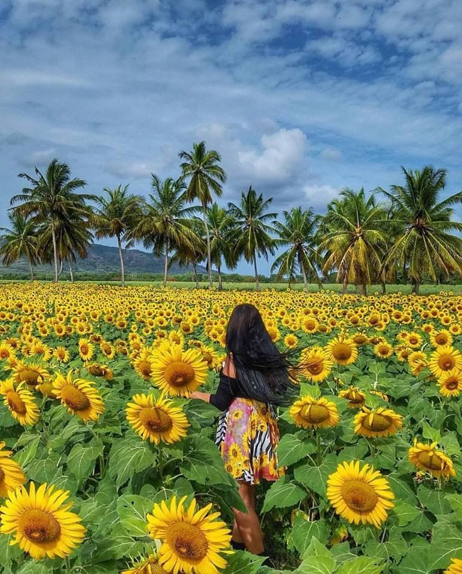
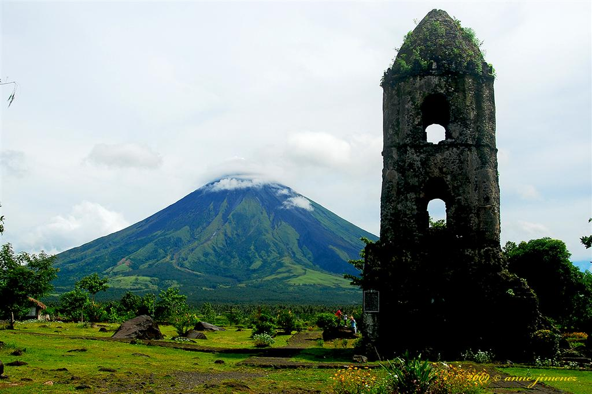
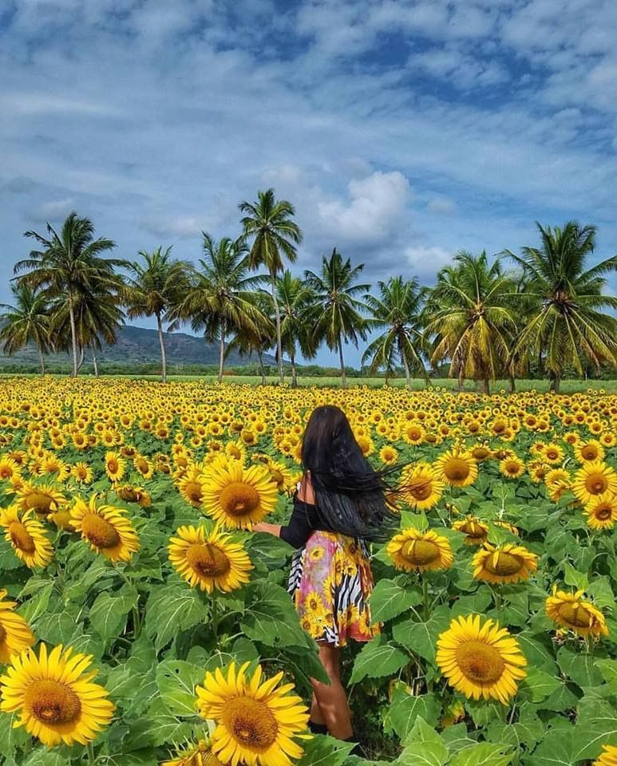
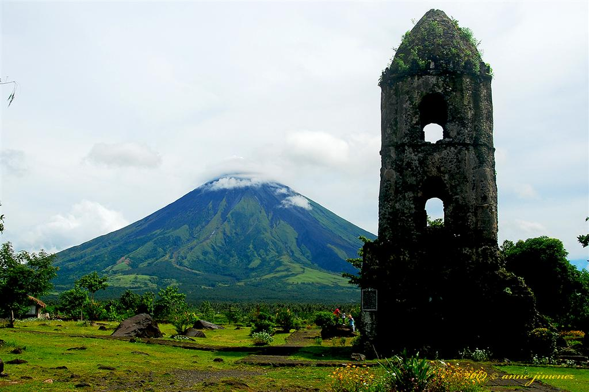
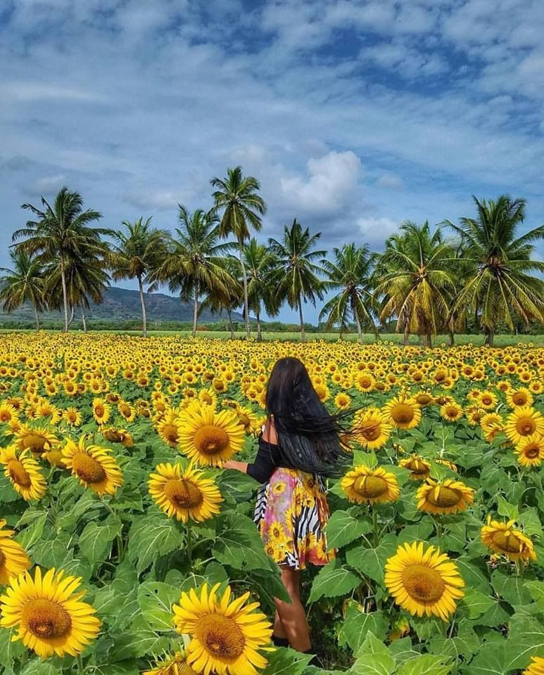
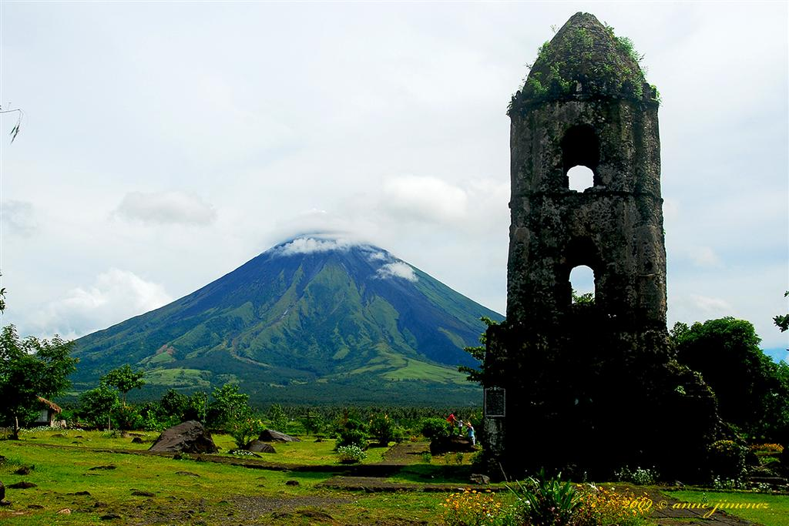
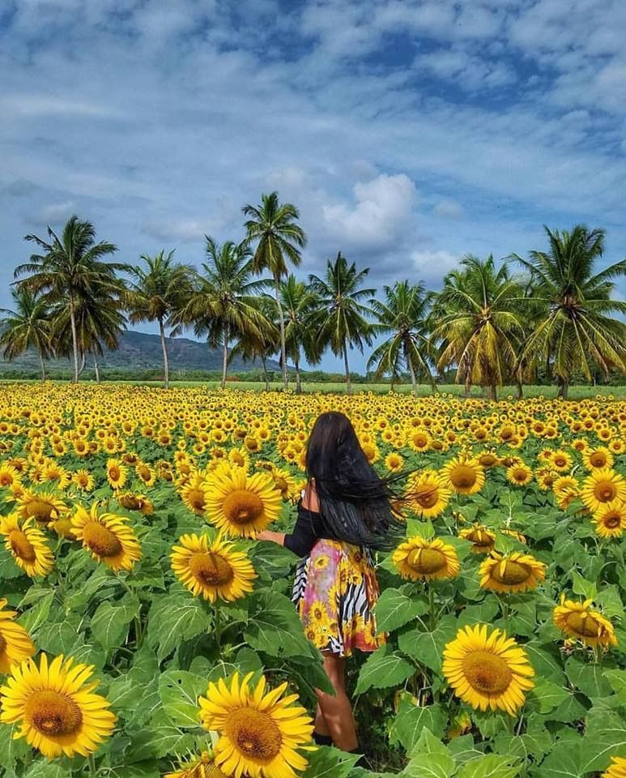
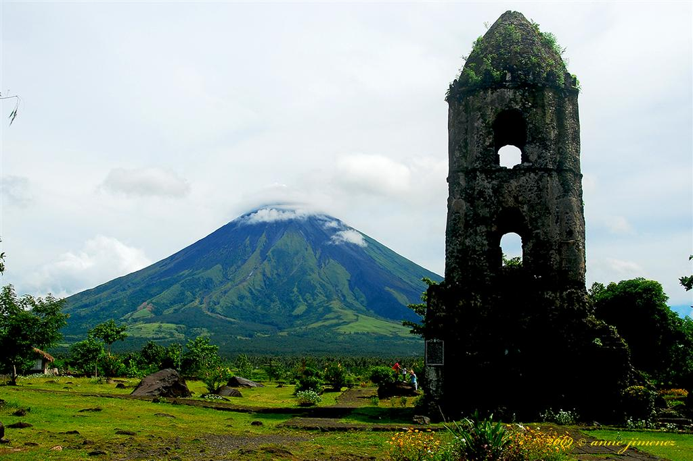

Albay is a province in the Philippines located in the Bicol Region. Its capital is the City of Legazpi. The province occupies the southeastern peninsula of Luzon and the outlying island provinces of Masbate and Catanduanes1. Albay is known for being home to the spectacular and famous Mount Mayon Volcano, the crown jewel of the region and among the great wonders of the world because of its perfect cone shape.